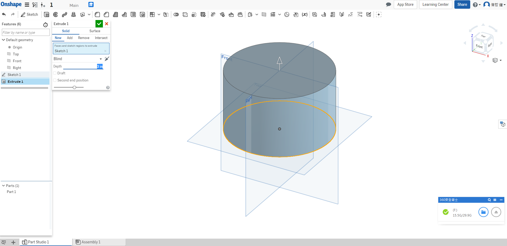
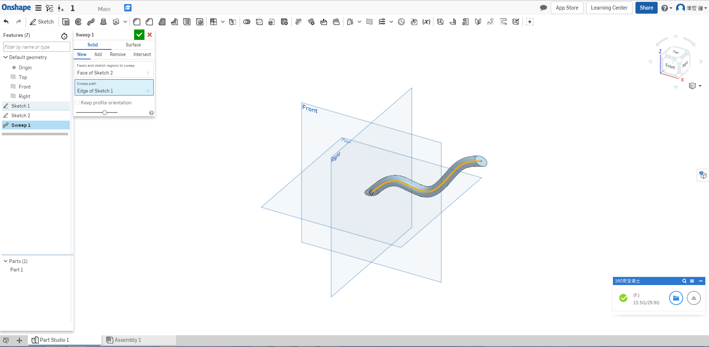
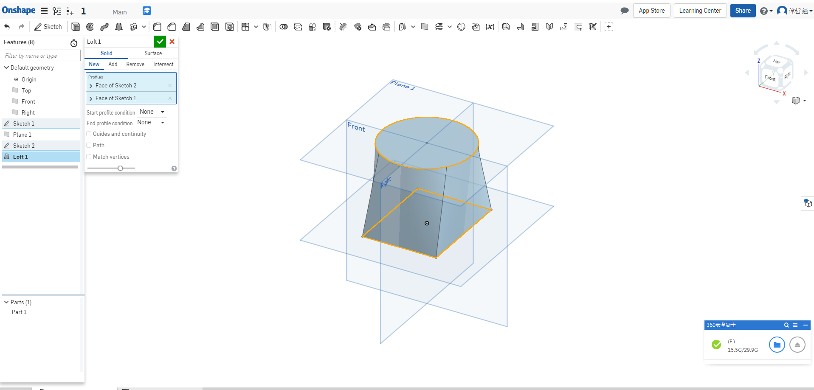

Onshape Assessment1
Q:What’s the quickest way to learn more about each feature in the toolbar?
(什麼是了解工具欄中每個功能的最快方法)
A:Hover the mouse over it for a second, and a description of the feature will pop up
(將鼠標懸停在其上一秒鐘，將彈出該功能的說明。)
Q:Briefly describe the four foundational features. Feel free to draw pictures if it helps:
(簡要描述四個基本特徵。 請隨意繪製圖片幫助說明：)
A:
a. Extrude( 擠出 ): This geometry is created when a constant cross section is extruded in a straight direction(當一個恆定的橫截面沿直線方向擠出時，會產生這種幾何形狀):

b. Revolve( 迴轉 ): This geometry is created when a constant cross-section is revolved
around an axis of revolution(當旋轉恆定橫截面時創建此幾何圍繞一個旋轉軸).

c. Sweep( 掃掠 ): This geometry is created when a constant cross-section is swept along a path(當沿路徑掃過恆定的橫截面時，會創建此幾何體).

d. Loft( 斷面混層 ): This geometry is created when multiple cross sections are smoothly
connected together(當多個橫截面平滑時，會創建此幾何體).

Q:What is the default geometry in a Part Studio?
(Part Studio中的默認幾何體是什麼？)
A:The origin and three orthogonal planes: Top, Front, Right.
(原點和三個正交平面：上視圖，前視圖，右側視圖 。)
Q:What’s the difference between a box select from Left-to-Right and a box select from
Right-to-Left?
(從左到右框選和從右到左框選有什麼區別)
A:L-R = selects everything within the box, R-L = selects everything the box touches
( 框選框框內的所有內容 )
Q:Can a document in Onshape have multiple Part Studios?
( Onshape的文件可以有多個Part Studios嗎 )
A:Yes.
Week4 << Previous Next >> Week5